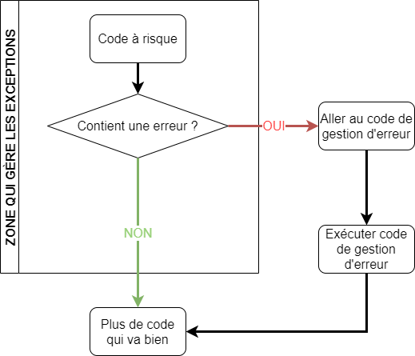

Procédures stockées et transactions
Procédures stockées
Les procédures stockées sont semblables aux fonctions. Elles permettent de préparer des traitements (comme des fonctions) et de les exécuter. À la différence des fonctions les procédures stockées :
- Peuvent ne pas retourner de valeur
- Peuvent s'appeller elle-même
- Les fonctions ne peuvent pas appeler de procédures, mais les procédures peuvent appeler des fonctions
Utilisation des procédures et des fonctions
Les procédures gèrent généralement la logique applicative (couche métier). Par exemple, les ajouts ou modifications aux données.
Les fonctions définissent généralement un traitement d’appoint, un calcul ou l'obtention d'un renseignement.
Déclarer et invoquer une procédure
DELIMITER $$
CREATE PROCEDURE nom_procedure()
BEGIN
traitement
END $$
DELIMITER ;
Pour invoquer une procédure, on utilise l'instruction CALL.
CALL nom_procedure();
Paramètres de procédure
Les paramètres d'une procédure peuvent prendre 3 formes :
- IN : paramètre d'entrée, donc en lecture seule
- OUT : paramètre de sortie, donc en écriture puis en lecture au besoin
- INOUT : paramètre d'entrée et de sortie (ref). En lecture et en écriture.
On inscrit des variables dans les paramètres OUT pour récupérer les valeurs. Si la variable contient déjà une valeur, il n'est pas possible de la récupérer dans la procédure.
Exemple
DELIMITER $$
CREATE PROCEDURE somme (IN _operande1 INT, IN _operande2 INT, OUT _resultat INT)
BEGIN
SET _resultat = _operande1 + _operande2;
END $$
DELIMITER ;
Invocation de procédure
SET @resultat = 0; -- Déclaration d'une variable
CALL somme(2, 4, @resultat); -- Invocation
SELECT @resultat; -- Affichage
Documenter une procédure
Chaque procédure s'accompagne d'une documentation d'en-tête
/**
* Description de la procédure
*
* @param IN | OUT | INOUT Nom du paramètre Description
* @param IN | OUT | INOUT Nom du paramètre Description
* ...
*/
Comme les procédures peuvent devenir très longues, il est important d'utiliser des commentaires pour les variables locales déclarées et certaines instructions (IF, WHILE, REPEAT ...)
--- Exercice 5.3.1 ---
A. Créez une procédure pour ajouter un nouveau groupe. Initialement l'enseignant est null. Vous connaissez seulement le semestre, l'année et le sigle du cours. Vous devez ajouter le numéro de groupe suivant (si le groupe 1 et 2 existent, alors le groupe aura le numéro 3). Le premier groupe porte le numéro 1. La procédure retourne le numéro du groupe qui a été créé. En cas d'erreur, le numéro -1 est retourné.
Paramètres : semestre, annee et sigle du cours Valeur de retour : le numéro du groupe qui a été créé
B. Créez une procédure pour inscrire un étudiant à un cours. La procédure reçoit le code de l'étudiant, le sigle du cours, le semestre et l'année pour l'inscription.
L'étudiant est toujours ajouté au groupe avec le plus petit numéro qui a une place de libre. Si le groupe est plein (4 étudiants et plus), alors un nouveau groupe est créé.
Le numéro du groupe dans lequel l'élève a été inscrit est retourné. En cas d'erreur, la valeur -1 est retournée.
Paramètres : code étudiant, sigle du cours, semestre, année Valeur de retour : numéro du groupe dans lequel l'inscription s'est faite
Transactions et gestion d'erreur
Concept d'exception en programmation Principe d’une transaction
Exceptions en programmation

Quand gérer les exceptions
- Quand une erreur de fonctionnement imprévisible est à risque de survenir :
- Donnée utilisateur
- Référence à un programme externe
- Référence à des données non contrôlées
- Gérer certaines scénarios d'exécution problématiques
Exceptions possibles en BD
Les exceptions possibles dans le domaine de la BD sont :
- Violation de contrainte
- Duplicat de clé primaire
- Duplicat de valeur unique
- Insérer NULL dans une colonne qui n'est pas nullifiable
- Ne pas respecter un contrainte CHECK
- Ne pas respecter une clé étrangère
- Exception personnalisées
Codes d'erreur MySQL
Les codes d'erreur de MySQL sont gérés par les SQLSTATE. Les états SQL sont des codes à 5 chiffres. Les 2 premiers indiquent un état global (erreur, avertissement, succès, information...) et les 3 derniers sont spécifiques à la situation
- 00### : indique un succès
- 01### : avertissement
- 02### : non trouvé
- >02### : exception
Lancer un signal
Le SGBD lance des sigaux lorsqu'une erreur interne se produit. Il est possible de lancer un signal avec un code d'erreur personnalisé.
SIGNAL SQLSTATE 'code 5 chiffres' SET MESSAGE_TEXT = 'Message erreur';
Gestion des signaux et des transactions
Pour attraper un signal, on déclare un gestionnaire (handler).
DECLARE action HANDLER FOR condition | code
L'action est de deux types : - CONTINUE : le bloc BEGIN - END continue son exécution après la gestion du signal - EXIT : le bloc BEGIN - END arrête son exécution après la gestion du signal.
Les gestionnaires peuvent seulement être déclarés dans les procédures.
Condition du gestionnaire
La condition peut être de différents types. - Une classe de signaux : - SQLWARNING - NOT FOUND - SQLEXCEPTION - Un code particulier : - Code d'erreur MySQL (4 chiffres) : https://dev.mysql.com/doc/mysql-errors/8.0/en/server-error-reference.html - Un code de signal SQLSIGNAL code5 - Le nom d'une condition (DECLARE ... CONDITION)
Exemple
Attraper les erreurs de clé primaire nulle
DECLARE EXIT HANDLER FOR 1171
-- Alternative
DECLARE EXIT HANDLER FOR 42000
Attraper toutes les exceptions
DECLARE EXIT HANDLER FOR SQLEXCEPTION
Afficher l'erreur
On récupère l'erreur avec une requête
GET DIAGNOSTICS
Par exemple pour récupérer le code et le message d'erreur actuel
GET DIAGNOSTICS CONDITION 1
_code = RETURNED_SQLSTATE,
_message = MESSAGE_TEXT;
SELECT _code, _message;
Exemple complet de gestion d'exception
CREATE PROCEDURE gestion_erreur()
BEGIN
DECLARE _code CHAR(5);
DECLARE _message TEXT;
...
-- On répère ce bloc pour chaque type d'erreur à traiter
DECLARE EXIT HANDLER FOR 00000
BEGIN
GET DIAGNOSTICS CONDITION 1
_code = RETURNED_SQLSTATE,
_message = MESSAGE_TEXT;
SELECT _code, _message;
END;
...
Transactions - Mise en situation
Timmy, dévoué programmeur, crée un script qui importe, dans notre système École, les notes de tous les étudiants à une évaluation . Afin d'éviter d'insérer de mauvaises données, Timmy applique la règle suivante : si une des notes ne peut pas être ajoutée (par exemple pour une violation de contrainte), alors aucune note n'est ajoutée.
Si notre script s’exécute automatiquement, comment appliquer cette mesure ?
Principe d’une transaction
Une transaction contient une série d’instructions. Une fois que toutes les instructions ont été effectuées, on peut les enregistrer ou les annuler.
L’utilisation de transaction facilite l’exécution d’instructions multiples et aide à maintenir une intégrité dans nos données.
Fonctionnement d'une transaction
- On commence pas indiquer notre intention de faire un bloc d'instructions (transaction) par START TRANSACTION
- On effectue les requêtes
- On COMMIT la transaction si tout s'est bien déroulé OU on ROLLBACK si on veut tout annuler.
Exemple
Ajoutez la contrainte suivante à la table Evaluation_etudiant
CONSTRAINT interval_note CHECK (note BETWEEN 0 AND 100)
Désactivons le autocommit de MySQL Workbench
Ajoutons maintenant les données suivantes
INSERT INTO Evaluation_etudiant (id_evaluation, etudiant, note, document) VALUES
(1, 1234567, 22, NULL);
INSERT INTO Evaluation_etudiant (id_evaluation, etudiant, note, document) VALUES
(1, 4567890, -5, NULL);
INSERT INTO Evaluation_etudiant (id_evaluation, etudiant, note, document) VALUES
(1, 8901234, 24, NULL);
Comment revenir supprimer le premier enregistrement qui s'est bien déroulé ?
Exemple de ROLLBACK
SELECT count(id_evaluation) FROM Evaluation_etudiant; -- Affiche 75
START TRANSACTION;
INSERT INTO Evaluation_etudiant (id_evaluation, etudiant, note, document) VALUES
(1, 1234567, 22, NULL);
INSERT INTO Evaluation_etudiant (id_evaluation, etudiant, note, document) VALUES
(1, 4567890, -5, NULL);
INSERT INTO Evaluation_etudiant (id_evaluation, etudiant, note, document) VALUES
(1, 8901234, 24, NULL);
SELECT count(id_evaluation) FROM Evaluation_etudiant; -- Affiche 77 (+2)
ROLLBACK; -- Il y a eu erreur
SELECT count(id_evaluation) FROM Evaluation_etudiant; -- Affiche 75
Exemple de commit
Les INSERT sont valides cette fois-ci.
SELECT count(id_evaluation) FROM Evaluation_etudiant; -- Affiche 75
START TRANSACTION;
INSERT INTO Evaluation_etudiant (id_evaluation, etudiant, note, document) VALUES
(1, 1234567, 22, NULL);
INSERT INTO Evaluation_etudiant (id_evaluation, etudiant, note, document) VALUES
(1, 4567890, 17, NULL);
INSERT INTO Evaluation_etudiant (id_evaluation, etudiant, note, document) VALUES
(1, 8901234, 24, NULL);
SELECT count(id_evaluation) FROM Evaluation_etudiant; -- Affiche 78 (+3)
COMMIT; -- Tout s'est bien déroulé
SELECT count(id_evaluation) FROM Evaluation_etudiant; -- Affiche 78
Démonstration
Créez une procédure pour inscire un nouveau vol. La procédure reçoit une immatriculation de vaisseau, le numéro de vol et le nom du capitaine du vol.
La procédure crée le vol et ajoute un membre d'équipage, le capitaine. En cas d'erreur, aucune donnée ne doit être créée.
--- Exercice 5.3.2 ---
A. Créez une procédure pour noter un étudiant. Cette procédure doit accepter un code étudiant, l'id de groupe (que l'on suppose avoir obtenu par un autre moyen) et le nom de l'évaluation.
Supposez que l'id du groupe et le nom de l'évaluation forme une clé unique.
Gérez l'erreur qui pourrait survenir si l'évaluation n'existe pas.
Votre procédure doit permettre d'assigner une note que Evaluation_etudiant existe ou non au préalable.
Paramètres : code_etudiant, id_groupe, nom_evaluation et note.
B. Créez une procédure pour permettre à un étudiant de déposer un travail. La procédure doit accepter un code etudiant, un id_evaluation (que l'on suppose avoir obtenu par un autre moyen) et les informations relative au document. On suppose que Evaluation_etudiant a déjà été créé pour l'évaluation et l'étudiant donné.
Si un document a déjà été déposé, alors :
- Mettez à jour l'information du document
- Déclencher un avertissement de code 01001 qui ne bloque pas l'exécution de la procédure
Paramètres : code_etudiant, id_evaluation et le titre du document
C. Vous devez ajouter 3 nouveaux enseignants dans le système École. Voici les données de ceux-ci.
Effectuez l'opération en utilisant les transactions. Si l'un d'entre eux ne peut pas être ajouté, alors aucune ne doit l'être.
| Code employé | Nom | No assurance sociale | Ancienneté |
|---|---|---|---|
| 7645 | Diana de Themyscira | 111 222 333 | 15 |
| 7654 | Jason Todd | 987 654 321 | 1 |
| 6574 | Barry Allen | 555 777 333 | 8 |